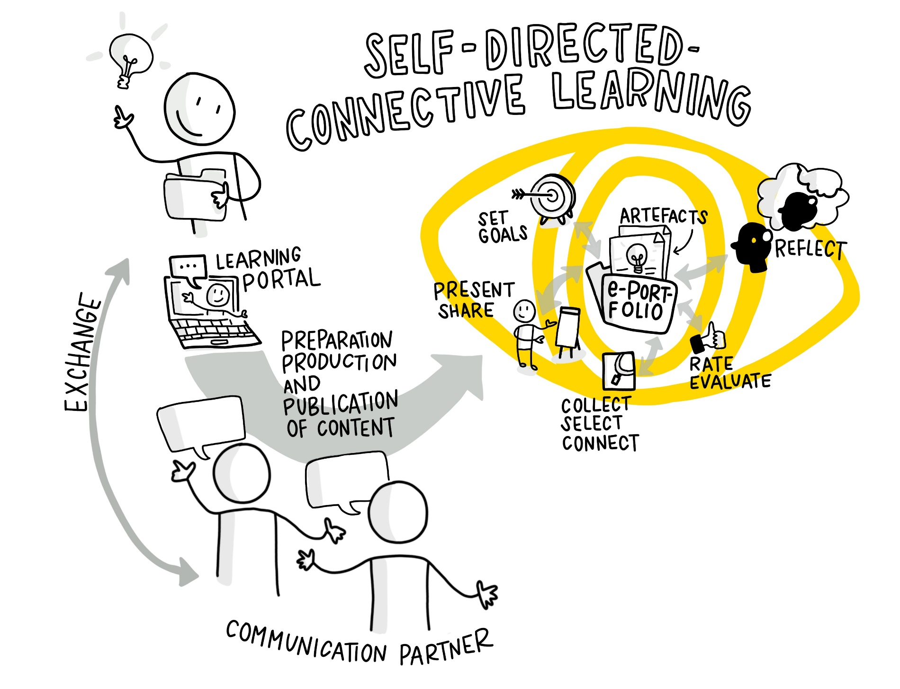

Home
ePortfolio Learning Circle Guide\ version 1.0 under Creative Commons licence CC BY 4.0\ Marcel Kirchner, Herta Schuster and Stefan Diepolder\

with sketchnotes from Katrin Mäntele (CC BY)
Table of contents
-
[Learning
pathway](onenote:#Learning%20path%20/%20Educational%20trail§ion-id={43b62924-579d-40fe-900e-148728de02c2}&page-id={46a156d9-c129-43cc-a431-33fdf51fa4e3}&end)
- [Lessons
learned](onenote:#Lessons%20learned§ion-id={43b62924-579d-40fe-900e-148728de02c2}&page-id={faf3e266-2d55-44e5-a9b7-5b523ac6d37f}&end)
-
[Appendix / Sources /
Links](onenote:#Appendix%20/%20Sources%20/%20Links§ion-id={43b62924-579d-40fe-900e-148728de02c2}&page-id={52e86251-c938-41f7-ab57-331d404d668a}&end)
Introduction
Your notes for exchange:
When six of us started our first lernOS Circle in September 2019, it was not yet clear where this learning journey would lead us finally. But we were aware that we wanted to connect this experiment with something that could give something back to others who would try it after us.
Basically each of us had his own topic that he pursued during the circle time. Nevertheless, the shared experience of supporting each other and exchanging information online enabled us to make good progress on all of our topics.
Therefore the decision was made relatively quickly to continue with three of us after the Circle and to create two own guides (Circle Guides), which should enable others to gain these experiences themselves through various innovative learning methods. So in the end one of these two guides was created and we hope that it can accompany you well on your learning journey.
Central objectives of this ePortfolio Learning Guide
This Circle Guide would like to show you a learning method with which you can continue your education in an exciting future topic and exchange and network with other learners.
You will be able to learn a basic and overview knowledge of the ePortfolio method and Social Software.
At the same time you will build or further develop your own ePortfolio with a suitable software and work out a detailed understanding of an exciting topic with others.
We are already looking forward to your field reports and wish you a lot of fun!
Basics
Your notes for exchange:
Basics for the ePortfolio Learning Circle Guide
In the beginning:\ If you are thinking about doing this Circle, you might want to have a look at the following basics that we have put together for you:
- What is actually behind the idea of an ePortfolio and what added
value can it offer?
-
What are the components of an ePortfolio?
-
How does the management of an ePortfolio work?
-
What does it mean to reflect with an ePortfolio?
Using the ePortfolio learning method we would like you to work together in a circle on an exciting topic of your choice. You can builc up an expertise that is visible online. It also gives you the opportunity to network with others on this topic and build up a new community of practice or join one. But now we will take a closer look at the basics at first.
1. What is actually behind the idea of an ePortfolio and what added value can it offer?
The portfolio method originally comes from the artistic field, in which works made with skill (= artifacts) are put together in a folder (portare = carry and folio = piece of paper in Latin). In addition, one discusses the contents of this portfolio with others in order to be able to develop further in the process and later even apply for a job. This was transferred to electronic use with the advent of digital media and the Internet. This also opens up more possibilities for designing an ePortfolio.
As a further introduction we would like to recommend a small [online tutorial]{.underline} which Marcel prepared in 2009 on this topic: ePortfolios in use (length approx. 9 min.)*
.
{width="4.783333333333333in" height="3.5833333333333335in"}
*As the native language is German please activate subtitles and choose English via the gear setting next to it:
{width="3.075in" height="1.1166666666666667in"}
For those who prefer it in written words we can describe ePortfolios briefly and concisely as a hybrid form of online learning using various social software. On the one hand this software serves to transparently present oneself as a person with one\'s competencies and to network with others (= social networking). On the other hand it is used in combination with an appealing way of documenting the learning process and results using digital media (= social publishing). What has been learned is reflected in the process and specifically put up for discussion (see Bernhardt / Kirchner 2007: 82 f. & Kirchner 2015: 32 f.).
{width="4.208333333333333in" height="5.0in"}
Illustration of an ePortfolio as a sketchnote from Katrin Mäntele \@kleinerw4hnsinn (CC BY)
Little scientific exkursion (optional):
For those who would like to know it in more detail the following classification is recommended (quoted from Kirchner 2015: 32ff. and translated corresponding into English):
The original classification in the German-speaking countries comes from the Salzburg Research Society \"EduMedia\":
\"E-portfolio is a digital collection of \'works made with skill\' (= lat. artefacts) of a person who wants to document and illustrate the product (learning outcomes) and the process (learning pathway/growth) of his or her competence development in a certain period of time and for certain purposes. The person concerned has made the selection of artefacts independently and organised them in relation to the learning objective. He/she, as the owner, has complete control over who, when and how much information from the portfolio can be viewed.\" (Hornung-Prähauser et al. 2007: 14 and Hilzensauer/Hornung-Prähauser 2006:4)\ (-> see also similar classification of terms on e-teaching.org - German language only)
According to this classification the product and process were always in the foreground at first but the feedback loop was neglected and the competencies required for this were only indicated. In addition, metaphorically speaking, one also speaks of a \"showcase of one\'s own learning\" (Bräuer 2000: 22, quoted after Brunner et al. 2008: 35 as well as Bauer/Baumgartner 2012). This is at least the [technological, rather tool-oriented perspective]{.underline}.
From a [pedagogical-didactic perspective]{.underline}, however, it is classified more as a (didactic) method of independent and competence-based learning and ist application of which is supported by various processes (including selection, reflection and presentation) with its own objectives and planning and can even go as far as a holistic institutionally controlled pedagogical concept. In the past this has led to an increasing confusion of terms.
Therefore the attempt was made to define an integrating view as a method and to link it to social software:
\"According to this a social software portfolio is a specific form of web-based self-presentation via an e-portfolio. The digital processing of the artefacts offers the owner additional media options for presenting learning products (especially in the form of audio and video). By means of social software and especially the use of weblogs such a portfolio also enables the owner to continuously reflect his personal development of (media) skills and thus encourages reflection in the self-directed connective learning process. This is particularly supported by offering visitors the opportunity to provide feedback on the content to the owner which in the case of e-portfolio blogs is expressed primarily through the comment function or mutual linking\". (quotef from Kirchner 2015: 36)
2. What are the components of an ePortfolio?
Here there is a wealth of possibilities and tools that can be used in different ways. The following is a recommendation based on our previous experience.
Everyone of us already uses different online tools to create content on the web even if it\'s only to write an e-mail in a small circle or to design a public website. This can be seen as a portal or gateway to the Internet. With the help of this personal learning portal the portfolio method can be applied directly, e.g. by having your own blog and using a social network such as LinkedIn or Twitter to provide and distribute your content (= artefacts).
In a broader sense content is generated through processes of setting goals, collecting, selecting, linking and reflecting and finally prepared for presentation, dissemination and possible evaluation (see Kirchner 2015: 57 with reference to Hilzensauer, Hornung-Prähauser 2006: 5 or Hornung-Prähauser et al. 2007: 15). In the narrower sense relevant content is taken up as a kind of an \"eye\" into the web and published in a suitable manner via a \"showcase\", e.g. as blog entries and tweets (see Kirchner 2015: 57 with reference to Bräuer 2000: 22 and Baumgartner / Bauer 2013).
The following infographic visually summarizes these processes:\
{width="8.633333333333333in" height="6.616666666666666in"}
Illustration of learning with ePortfolios as sketchnote by \@kleinerw4hnsinn (CC BY)\ According to a slightly adapted model of self-directed connective learning with e-portfolio blogs (Kirchner 2015: 58, Figure 11) as a further development following Bernhardt / Kirchner 2007: 89 and with reference to Hilzensauer, Hornung-Prähauser 2006: 5
3. How does the management of an ePortfolio work?
When using an ePortfolio and applying the associated method the following [processes]{.underline} are essentially carried out which have already been briefly mentioned above (see Hornung-Prähauser et al. 2007: 15):
- Setting goals to clarify the procedure and framework conditions
for managing the ePortfolio.
- Collecting, selecting and linking the contents in order to
document the competence development in the learning process.
- Reflecting in the ePortfolio in order to critically question
one\'s own performance and analyze the learning goal.
- Presenting and passing on the results to third parties in order
to make the competence development visible.
-
Assessing and evaluating the ePortfolio in order to be able to
assess the competence development holistically (optional).
4. What does it mean to reflect with an ePortfolio?
Therefor we recommend [the first two minutes]{.underline} of Marcel\'s second online tutorial:
ePortfolios in use - part 2 (total length approx. 8 min.)*
{width="4.783333333333333in" height="3.5833333333333335in"}
*As the native language is German please activate subtitles and choose English via the gear setting next to it:
Typical questions for orientation which you should ask yourself again and again for reflection and which should be recorded as answers in the ePortfolio are:
-
\"What have I learned so far?\"
-
\"Where do I stand today?\"
-
\"What should be my next steps?\"
(Atwell 2007, Hornung-Prähauser et al. 2007)
Now you have received all the important basic information about learning with ePortfolios and you can continue on your learning path.
Sources
-
Attwell, Graham (2007): E-Portfolio Entwicklung und Verwendung > [Video-Quelle]. Ins Deutsche übersetzt von der Salzburg Research > Forschungsgesellschaft. > http://blip.tv/pontydysgu/e-portfolio-entwicklung-und-verwendung-416096 > [last possible access on 19.10.2013].\ > Available alternative content on slideshare: > https://de.slideshare.net/GrahamAttwell/eportfolio-development-and-implementation > [access on 12.10.2020]
-
Bauer, R. / Baumgartner, P. (2012): Schaufenster des Lernens: Eine > Sammlung von Mustern zur Arbeit mit E-Portfolios. Münster: Waxmann > Verlag.
-
Baumgartner, P. / Bauer, R. (2012): Didaktische Szenarien mit > E-Portfolios gestalten: Mustersammlung statt Leitfaden. In: > Csanyi, G. / Reichl, F. / Steiner, A. (Hrsg.): Digitale Medien - > Werkzeuge für exzellente Forschung und Lehre. Medien in der > Wissenschaft, Band 61, S. 383-392. Münster: Waxmann.
-
Baumgartner, P. / Zauchner, S. / Bauer, R. (Hrsg.) (2009): The > Potential of E-Portfolios in Higher Education. > Innsbruck/Wien/Bozen: StudienVerlag.
-
Bernhardt, Thomas / Kirchner, Marcel (2007): E-Learning 2.0 im > Einsatz - \"Du bist der Autor!\" - Vom Nutzer zum WikiBlog-Caster. > vwh-Verlag, Boizenburg.
-
BraÃàuer, Gerd (2000): Schreiben als reflexive Praxis: Tagebuch,
Arbeitsjournal, Portfolio. Freiburg im Breisgau: Fillibach-Verlag.
-
Brunner, I. / Häcker, T. / Winter, F. (Hrsg.) (2008): Das Handbuch > Portfolioarbeit (2. Auflage). 1. Auflage 2006. Seelze-Velber: > Kallmeyer.
-
Hilzensauer, W. / Hornung-Prähauser, V. (2006): ePortfolio -- > Methode und Werkzeug für kompetenzorientiertes Lernen. Salzburg > Research Forschungsgesellschaft m.b.H. -- EduMedia [PDF]. Online > verfügbar unter: http://edumedia.salzburgresearch.at/ > images/stories/EduMedia/Inhalte/eportfolio_srfg.pdf > [last possible access on 03.12.2012]. Alternative link on: > https://docplayer.org/16445308-Eportfolio-methode-und-werkzeug-fuer-kompetenzbasiertes-lernen.html > [access on 12.10.2020]
-
Hornung-Prähauser, V., Geser, G., Hilzensauer, W., Schaffert, S. > (2007): Didaktische, organisatorische und technologische > Grundlagen von E-Portfolios und Analyse internationaler Beispiele > und Erfahrungen mit E-Portfolio-Implementierungen an Hochschulen. > Salzburg: Salzburg Research Forschungsgesellschaft und > fnm-austria. Online verfügbar als PDF unter: > http://www.fnm-austria.at/projekte/ePortfolio/Dateiablage/view/fnm-austria_ePortfolio_Studie_SRFG.pdf > [last possible access on 15.02.2013]. Alternative link on: > https://www.yumpu.com/de/document/view/32927444/didaktische-organisatorische-und-technologische-grundlagen-von- > [access on 12.10.2020]
-
Kirchner, Marcel (2015): Social-Software-Portfolios im Einsatz -- > Zwischen Online-Lernen und Medienkompetenz im > selbstgesteuert-konnektiven Lernalltag. vwh-Verlag, Boizenburg.
Learning pathway
First of all a brief outline of the general conditions in this learning circle:
- Time frame: 13 weeks, if necessary with a break (1 x per week circle
meeting + self-directed learning)
-
Week 0 for a common introduction (= try it out) and afterwards
-
12 weeks for interactive exchange about the methods and contents of > the topics
- Exchange (1 hour together via online presence meeting) and
so-called Katas (= exercises)
-
Workload Basic 2 hours per week for beginners
- Workload Deepening +2 hours per week for special interested /
advanced learners
- The katas of the respective week are exercises with the > recommendation to work through them during the week. They > prepare you well for the exchange in the following week > (flipped circle).\ >  
In the next weeks you will be concerned with the following learning areas\ (Attention: please look at the following overview from bottom to top üòâ):
![Learning area 7: Encourage feedback and exchange about the ePortfoIio
topics as well as lessons learned Week 12 Learning area 6: Preparation
of a topic agenda and publishing of further posts with potential
exchange Week 10 and 11 Learning area 5; Networking and promotion of the
ePortfolio within the community Week 8 and 9 Learning area 4: Creation
and preparation of the first topic post and learning contemplation Week
6 and 7 Learning area 3: Selection of ePortfoIio tool and further
development of the topic Week 4 and 5 Learning area 2: State topic
interest and define objectives for the e Portfolio Week 2 and 3 Learning
area 1: Get to know circle members and ePortfoIio method Week O and 1
e-poRT- FOLIO](../images/image7.jpeg) {width="6.591666666666667in"
height="9.333333333333334in"}
{width="6.591666666666667in"
height="9.333333333333334in"}
Visualisations as sketchnotes from Katrin Mäntele - on Twitter \@kleinerw4hnsinn (CC BY)
And here we go directly with Learning area 1! üòä
Your notes for exchange:
Learning area 1 - Get to know
Getting to know the circle members and the ePortfolio method, checking the level of knowledge among each other and looking at examples -- recognizing added value
(weeks 0-1)\ \ [Structure:\ ]{.underline}Week 0\ A) Getting to know each other and intention of the circle\ B) Discussion of the circle learning path over the 12 weeks\ C) Future exchange framework (time and tool usage) and expectations
First short basic kata
Week 1\ D) Common basic understanding of the ePortfolio method and approaches -- go through the Basics\ E) Present expectations and compare them with basic understanding\ F) Indicate interest in the topic and identify initial similarities
Recommended basic kata and possible advanced kata as well as first optional video kata
 {width="6.441666666666666in"
height="3.9166666666666665in"}
{width="6.441666666666666in"
height="3.9166666666666665in"}
Sketchnote \"Joint access to the ePortfolio Circle Guide\" from Katrin \@kleinerw4hnsinn (CC BY)
Week 0 - Getting to know each other
Sketchnote \"Joint access to the ePortfolio Circle Guide\" from Katrin \@kleinerw4hnsinn (CC BY)\ \ \ [A) Getting to know each other and intention of the circle]{.underline} | (approx. 25 minutes)\ Welcome to the ePortfolio Learning Circle Guide!
Great that you have gathered here and want to get to know this new learning method! Please take enough time to introduce yourselves to each other at the beginning. Who are you, what do you deal with in your daily work and what are you particularly interested in or have always wanted to learn more about?
[B) Discussion of the circle learning path over the 12 weeks]{.underline} | (approx. 15 minutes)\ To get a first overview of what to expect, please take a look at the golden thread of this learning path. For this purpose we have prepared the clear sketchnote in the beginning that shows you the seven learning areas from bottom to top. Directly in front of each of the learning areas also the structure of the content is shown (e.g. see above). This should help you to find your way around and give you a first basic understanding of the content.\ In the following lines you can see an overview of the learning areas again:\
-
Learning area 1: Get to know circle members and ePortfolio method | > Checking the level of knowledge among each other and looking at > examples -- recognizing added value (2 weeks = 2w)
-
Learning area 2: State topic interest and define objectives for the
ePortfolio (2w)
- Learning area 3: Selection of ePortfolio tool and further
development of the topic (2w)
- Learning area 4: Creation and preparation of the first topic post
and learning contemplation (2w)
- Learning area 5: Networking and promotion of the ePortfolio within
the community and obtain initial topic feedback and ideas (2w)
- Learning area 6: Preparation of a topic agenda and publishing of
further posts with potential exchange (2w)
-
Learning area 7: Encourage feedback and exchange about the
ePortfolio topics as well as lessons learned (1w)
[C) Future exchange framework and expectations]{.underline} | (approx. 20 minutes)\ Please decide together when you want to meet for an hour each week and if you would like to take a short break (at half time). You should send yourself a first calendar invitation with the planning details (especially the meeting link).
It is also important to clarify how you can come together in the best way:\ We recommend an online conference tool, such as Teams, Skype or Zoom and if necessary a common online application to document your first thoughts and ideas, such as OneNote, Etherpad or a Wiki. You are also welcome to use our Circle Template, which we have put together for you.
Surely it would be helpful if one of you takes over the moderation and either someone else or all of you together make notes in the tool. From our experience it works well if the moderation among the circle members rotates weekly.
At the end of the week you can have a look at the content of week 1 and see what you can expect next. This can always be done as a check-out every week to help you get a quick overview. The exercises, so called katas, are mostly structured in a way that you can start or discuss them together in the circle meeting and then complete them over the week to take the results back into the next circle meeting.
And off we go with a short [basic kata]{.underline} for the entry week (about 1 hour effort):\ Please think about what you expect from this Learning Circle and keep it in mind. You can start this in the first presence meeting and bring it with you until next week. Therefor we recommend that you take a look at the basics of the ePortfolio learning method.
Your notes for exchange:
Week 1 - Basic understanding
[D) Common basic understanding of the ePortfolio method and approaches]{.underline} | (approx. 25 minutes)\ Welcome to the first content week of the Circle Guide! It\'s great that you want to stay tuned after last week\'s sniffing around and that you want to get to know the new learning method in detail! In order to get a common basic understanding, please take a closer look at the basics together again. It\'s best to go through them together - maybe one of you has already browsed a bit during the last week and can give the others a short summary of his or her findings? Of course, you can also watch the videos individually afterwards or discuss them briefly to avoid wasting too much time of your valuable hour.
[E) Present expectations and compare them with basic understanding]{.underline} | (approx. 25 minutes)
Since you have also thought about what you expect from the Learning Circle during the week, go through them one by one and present them. It also addresses how this can fit in with the basic understanding of the ePortfolio learning method.
[F) Indicate interest in the topic and identify initial similarities | (approx. 10 min)]{.underline}
At the end, if it has not already been touched upon in the expectations, think about the thematic direction you might want to take in the next few weeks. This will then be your central object of exchange and learning with the others.
[Basic kata]{.underline} for this week (approx. 1 hour):\ Describe your interests in the course of the week. This can be done in bullet points for the time being and, if required, also include a small link list or media collection (graphics, short explanatory videos).\ \ Also take a look at [1 or 2 examples]{.underline} from the following list to get a first orientation on how an ePortfolio can look like for the upcoming week :
- Dion Hinchcliffe - person-oriented business portfolio\ - Sketchnoting and Office 365 - topic-oriented portfolios from Luise Freese
- Petra Schubert and Susan Williams - network-oriented academic portfolios on ResearchGate
- Sebastian Thomas - person-oriented business portfolio (German language only = Glonly)\ - Elearning20.de - topic-oriented Co-Portfolio of Thomas Bernhardt and Marcel Kirchner (Glonly)\ - Harald Schirmer - combined person and topic portfolio (Glonly)\ - VUCARockers - a growing ePortfolio community from Harald for designers of the future (Glonly)\ \ [Recommended advanced kata]{.underline} for the week (approx. 1.5 hours):\ Search for examples of ePortfolios in the web (e.g. thematic blogs or podcasts) that you find exciting and bring them with you to the next circle meeting. Also explain why you think they might fit in well with the basic understanding of an ePortfolio.\ \ [Optional video kata:\ ]{.underline}Present your favorite ePortfolio in a short video - this can include:
Who runs the ePortfolio and which topics does it deal with?
For a quick start into video production you can have a short look into this two microlearnings:
-
[Screen Recording with Microsoft
Stream](https://web.microsoftstream.com/video/33afa265-2f42-45da-b3f8-6b3e4ff3191c)
 {width="6.658333333333333in" height="3.75in"}
{width="6.658333333333333in" height="3.75in"}
-
[Create a video with the Microsoft Stream Mobile
App](https://web.microsoftstream.com/video/fe6d5961-60d6-4770-83db-a413aec84b94)
{width="8.383333333333333in" height="4.741666666666666in"}
Your notes for exchange:
Learning area 2 - Topic interest
State topic interest and define objectives for the ePortfolio\ (weeks 2-3)
\ [Structure:\ ]{.underline}Week 2\ A) Brief presentation of ePortfolio examples you have brought with you\ B) Limit the possible topic interest for the ePortfolio and clarify motivation (Why?)\ C) Define the objective(s) of the ePortfolio and whom I want to reach (target group(s))\ Basic and advanced kata\ \ Week 3\ D) Present the topic interest, motivation, objective(s) and target group(s) to each other\ E) Taking and giving feedback\ F) How do I prospectively structure my possible weekly activities in my ePortfolio?
Basic and advanced kata and another optional video kata
 {width="6.441666666666666in"
height="3.9166666666666665in"}
{width="6.441666666666666in"
height="3.9166666666666665in"}
Sketchnote \"Topic ideas and objectives of the ePortfolio\" from Katrin \@kleinerw4hnsinn (CC BY)
Week 2 - Objectives
{width="6.441666666666666in"
height="3.9166666666666665in"}
Sketchnote \"Topic ideas and objectives of the ePortfolio\" from Katrin \@kleinerw4hnsinn (CC BY)
[A) Brief presentation of ePortfolio examples you have brought with you]{.underline} | (approx. 25 minutes)\ Welcome to the second content week! After you were able to gain a basic understanding of the ePortfolio learning method last week and determined a rough interest in the topic you will deepen this together today. Please take a closer look at some examples of ePortfolios and introduce them to each other in a circle. Pay special attention to similarities or differences between the examples. You are welcome to write down a short list of criteria that are recurring in the examples or that are very individual to give you further orientation.\ \ [B) Limit the possible topic interest for the ePortfolio and clarify motivation (Why?)]{.underline} | (approx. 25 minutes)\ Now please introduce each other your topic of interest about which you would like to build your ePortfolio and why it is so exciting or relevant for you. We would also like you to give your first feedback on this.\ \ [C) Define the objective(s) of the ePortfolio and whom I want to reach (target group(s))]{.underline} | (approx. 10 minutes)\ At the end of the session think about a first possible objective for the ePortfolio and whom you want to reach first. Of course this may change or expand over time.
[Basic kata]{.underline} for this week (approx. 1 hour): Out of the current state please formulate your detailed ePortfolio topic of interest / subject, the main target group and a central goal of the ePortfolio.
Example for orientation: \"I would like to create an environment in which I can develop and document my personal learning steps on the topic of artificial intelligence and make them available to the community. Above all, I would like to inspire other interested parties for this field of interest and, if possible, enter into an exchange with experts\".[\ \ Advanced kata]{.underline} (approx. 1 hour): Formulate in-depth learning goals or sub-goals and carry out a small target group analysis in order to be able to address different groups more effectively if necessary.
-> If applicable assistance with target group analysis and formulation of learning objectives -> Formulating core questions
Your notes for exchange:
Week 3 - Structuring
[D) Present the topic interest, motivation, objective(s) and target group(s) to each other]{.underline} | (approx. 20 minutes)\ This week you are about to complete all basic, content related requirements for the start of the ePortfolio. So this is the first important milestone before we start selecting the suitable online tool and the first release. Today take turns introducing your topics of interest / subjects to the circle and describe the target group and goal(s) you want to reach with your ePortfolio.\ \ [E) Taking and giving feedback]{.underline} | (approx. 20 minutes)\ For the others in the circle it is important to listen proactively to the presenter and to give constructive feedback. Ideally, this feedback should be documented immediately and appropriately so that it can be used for the fine-tuning.\ \ [F) How do I prospectively structure my possible weekly activities in my ePortfolio?]{.underline} | (approx. 20 minutes)\ Finally think about together in the circle whether and how you can bring a certain regularity towards the management of an ePortfolio. Here, for example, it makes sense to think about the frequency with which contributions are planned, created and published, which formats you want to try out, whether you want to create a so-called contribution backlog (list of possible content that can be considered for contributions) and how this can look like.
[Basic kata]{.underline} for this week (about 1 hour):
Based on the feedback received from the others develop your topic of interest / subject further and refine the description of the objectives.\
[Advanced kata]{.underline} \"Having the end in mind\" (approx. 1 Stunde)\ Think about how the concrete end result after the 12 weeks of the circle might look like? Sketch it out briefly, even if there is only a vague picture of this result. Use this image in the coming weeks to refine, add and change it. That way you can better reflect later on where you are and what you still want to achieve.
[Video kata]{.underline} (approx. 1 hour):\ Create a small video podcast sequence in which you describe the topic interest and the objectives of the ePortfolio in order to arouse the interest of your target group later.
Your notes for exchange:
Learning area 3 - ePortfolio tools
Selection of ePortfolio tool and further development of the topic\ (weeks 4-5)
[Structure:\ ]{.underline}Week 4\ A) Present possible further development of the topic\ B) Have a look on the curated ePortfolio tool list and exchange possible experiences with a tool
C) Distribution among the circle members (each one a tool for a closer look)\ \ Week 5\ D) Presentation of the tool findings by means of a tool arena\ E) Exchange pros and cons in the group
F) Decide (at the meeting or during the week) which tool you want to use for your ePortfolio and why
 {width="6.541666666666667in"
height="3.975in"}
{width="6.541666666666667in"
height="3.975in"}
Sketchnote \"Experiment with different ePortfolio tools\" from Katrin \@kleinerw4hnsinn (CC BY)
Week 4 - Variety of tools
{width="6.541666666666667in"
height="3.975in"}
Sketchnote \"Experiment with different ePortfolio tools\" from Katrin \@kleinerw4hnsinn (CC BY)
\ \ [A) Present possible further development of the topic]{.underline} | (approx. 15 Minuten)\ In this week you should complete your subject / topic of interest in the first glance and reach a finalized first version for you. You can use the time together in the circle to present the last developments or adjustments based on the received feedback to the others. You don\'t have to do that this time but you can also ask the others to look at your final version during the week. Surely some of you will have an idea that might be discussed in the circle.
If applicable ask yourself the following question: What do you think are the basic characteristics of a good ePortfolio and what basic functionalities should it have? (see also Basics)\ \ [B) Have a look on the curated ePortfolio tool list and exchange possible experiences with a tool]{.underline} | (approx. 25 minutes)\
Have a look at the following list of recommendations and exchange ideas about who already knows which tool or has first experiences with it.\
Top 10 list of recommended ePortfolio tools by the guide authors (in any order)
-
Padlet -- simple, quick to set up pinboard > with different pre-configured designs and formats. Very > comfortable to use and to share and collaborative fillable. 3 > padlets are free per user. Simple tool, very popular also e.g. for > schools.
-
Mahara -- probably the most established > ePortfolio tool, especially popular in schools and universities. > Free for educational institutions up to 100 persons. Wide range of > functions with portfolio (views, file collection, learning > diaries), groups, forums, profile with learning goals and plans.
-
Wordpress -- One of the best known Open > Source CMS systems which is used very successfully for weblogs and > homepages. With many themes and add-ons. Good and comfortable to > use.
-
PebblePad - commercial ePortfolio > tool with extensive functionality, customizable templates and > external app integrations
-
OneNote - > Standard tool from Microsoft which can be licensed either freely > (up to 5GB of data) or commercially via educational and business > licenses. Very popular in school environments where it can already > be used in digital lessons (cloud technology). Very flexible in > use and is constantly being expanded and improved. Can be > integrated into the Office 365 ecosystem.
-
Connections - > Enterprise social networking platform from HCL (formerly provided > by IBM) which promotes the transparent preparation and design of > an ePortfolio via an internal community concept with blog, wiki > and forum module
-
LinkedIn / Xing > as ePortfolio online profile tools with social networking focus to > present yourself professionally and exchange information with > other network members
-
Twitter as network-based microblogging tool > to present short information and helpful links and to exchange > with other followers via hashtags
-
Combined version of OneNote and Connections (internal
company solution)
- Combined version of Wordpress, Twitter and LinkedIn / > Xing (external solution)\ >  
We especially recommend that you also think about possible tool combinations. Because from a functional point of view they can offer the most added value when creating and publishing your contributions.
\ [C) Distribution among the circle members (each one a tool for a closer look]{.underline} | (approx. 20 Minuten)[\ ]{.underline}Decide together who would like to take a closer look at which tool in the course of the week. Choose one tool at a time and think about the first criteria that would be especially important for you to be able to give an assessment of the usability as an ePortfolio. It might also make sense to split up according to the tool combinations recommended at the end of the list and then collect the analyses by the following week.\
[Basic kata]{.underline} for this week (approx. 1 hour):\ Select an ePortfolio tool from the orientation list and experiment with it until the following week, when you briefly introduce it to the others. Below you will find a small tool template that you can use as an orientation and fill out to present it to your Circle members next week. Helpful criteria can be, for example, user-friendliness (usability) and click paths, possible costs, suitable application scenarios as well as dialogue and feedback possibilities.
+-------------+-----------------+-----------------+-----------------+ | Tool | Description | + good / - | My | | | and criteria | bad | r | | | | | ecommendation | +=============+=================+=================+=================+ | Example:\ | Mix of videos | + comfortable | I would use | | Microsoft\ | and screenshots | embedding of | the tool to | | OneNote | that I have | media (videos, | work out topics | | | embedded in my | wakelet, office | for myself. I | | | text. Various | etc.) | would share the | | | thematically | | notebooks in | | | different | + structuring | small groups | | | notebooks\ | easily | and develop | | | Topic: Learning | possible | them further | | | hacks | | with my | | | | - unwieldy for | colleagues. | | | | larger groups | | | | | (compared to | | | | | blog etc.) | | +-------------+-----------------+-----------------+-----------------+ | ... | ... | ... | ... | +-------------+-----------------+-----------------+-----------------+ |   |   |   |   | +-------------+-----------------+-----------------+-----------------+
[Advanced kata]{.underline} (approx. 1 to 2 hours): Make a comparative tool analysis for two of your favorite tools which you then present to the others. This way you can make a better decision together.\ As an orientation guide the preparation with regard to the 8C-model for collaborative technologies from Susan Williams (2011) can serve here (see also the following PDF).
Your notes for exchange:
Week 5 - Tool selection
[D) Presentation of the tool findings by means of a tool arena]{.underline} | (approx. 25 minutes)[\ ]{.underline}Present your findings about the tools you tried out to each other today.
Our recommendation: Compare about five essential core functions of the respective ePortfolio tool which you will \"compete\" with each other in the circle. Which one offers which advantages? This will give you a quick insight into the variety of tools.\ \ [E) Exchange pros and cons in the group]{.underline} | (approx. 25 minutes)[\ ]{.underline}During the arena rounds please exchange which pros and cons there are for which ePortfolio tool and keep them in a comparison (e.g. as a table).\ \ [F) Decide at the meeting or during the week which tool you want to use for your ePortfolio and why]{.underline} | (approx 10 minutes)[\ ]{.underline}Try to make a decision during the circle meeting as to which ePortfolio tool or combination is most suitable for you and share it with the others. If you are still a bit uncertain you can continue to think about it during the week and use the recommendations of the others to get clarity for yourself. In any case, please let the others know which tool or combination you have chosen. This doesn\'t have to be final but it is important for the beginning to be able to get started.\ \ [Basic kata]{.underline} for this week (approx. 1 hour):\ Make the final decision for the ePortfolio tool or tool combination you would like to use from now on. Search for valuable short explanatory videos or links for using your favorite ePortfolio tool and share them online. This can be a good further orientation and decision support for those who are still undecided.\ \ [Advanced video kata]{.underline} (approx. 1 to 2 hours):\ Create a short recommendation video for the others why you chose your ePortfolio tool or your tool combination.
Your notes for exchange:
Learning area 4 - Topic article and learning reflection
Creation and preparation of the first topic post and learning contemplation (weeks 6-7; with reference to the Content Curation circle guide week 8 -- types of curation)
[Structure:]{.underline}
Week 6\ A) Searching and reading of first sources (Seeking method)
B) Classification of the sources with short explanation (Sensemaking method)
C) Instructions on how a good learning reflection can be processed
Week 7
D) Short presentation of the entry level sources and integration into the first topic article / posting
E) Publication of the article / if applicable video microlearning (Sharing method)
F) Learning reflection round of the last two weeks
 {width="6.466666666666667in"
height="3.941666666666667in"}
{width="6.466666666666667in"
height="3.941666666666667in"}
Sketchnote \"Preparation and publication of first contents\" from Katrin \@kleinerw4hnsinn (CC BY)
Week 6 - Investigation and reflection
{width="6.466666666666667in"
height="3.941666666666667in"}
Sketchnote \"Preparation and publication of first contents\" from Katrin \@kleinerw4hnsinn (CC BY)
[\ A) Searching and reading of first sources (Seeking method)]{.underline} | (approx. 20 minutes)
After the tool selection for ePortfolios in the past two weeks, the focus is now back on content. In order to be able to create a first article on a topic, relevant information and people have to be searched for and discovered. Either information can be found automatically via social media channels, RSS feeds or content aggregators with artificial intelligence, like anderspink.com or refind.com. Or you actively search and observe yourself on content portals, in open knowledge resources - Open Educational Resources (OER), on YouTube, in blogs or search engines and social media channels. Exchange about possible concrete sources for your first professional contribution for your created topic interest.
[B) Classification of the sources with short explanation (Sensemaking method)]{.underline} | (approx. 20 minutes)
How would you formulate a rationale for a good source?\ What are the basic criteria to be considered? Discuss this among yourselves.
Below is a small orientation from us that can help with the discussion:
Criteria that speak for high quality content: :
-
The author is an expert in his/her field. You can find this out by > following them on social media channels like Twitter or LinkedIn, > researching their posts, looking at their publication history or > analyzing personal blogs or video channels. Very good experts are > also often invited to lectures and events or recommended by > colleagues from the network.
-
The contents quote sources and do not just reflect their own > opinion. You can see this for example in links and references in > texts or e.g. in the so-called \"shownotes\" of podcasts and links > in YouTube videos. 
- Famous content providers such as publishing houses, portals or > universities post or link to the content. The contents are linked, > recommended and discussed by colleagues on social media channels > and in blog posts and invite you to form an opinion and to get > more closely involved with the author or the topic.
There are basically not THE criteria to classify the quality of a source. The perception of what is and what is not good quality content depends strongly on your own personality and preferences. For example, people who work in the natural sciences and are used to reading a lot and processing the information read quickly and effectively, scientific texts published by renowned universities and researchers feel more relevant and valuable than, for example, a short explanatory video that gets to the heart of exactly the same content in 5 minutes in an animated way.
Therefore it is especially valuable to give your readers a short personal assessment of why you consider the cited sources to be valuable and relevant and what you yourself have learned while working with these media.
This is also an ideal transition to the third point of today, the learning reflection.
[C) Guidance on how a good learning reflection can be processed]{.underline} | (approx. 20 minutes)\ The main goal of an ePortfolio is to make your own learning and the learning process visible. Of course you learn a lot by bringing together different sources and content on your topic, preparing them, processing them and then presenting them for discussion in the ePortfolio. But a not inconsiderable part of learning takes place through your reflection - i.e. thinking and observing how you learn (best) in which way, which activities are most beneficial for you, how you make connections to your existing knowledge. This deepens your knowledge, makes learning easier for you and helps you to plan your learning process more effectively. At the same time you show others how you learn. Therefore it is important that you develop your ability to reflect on your learning with your growing ePortfolio.
Share how you normally think about your learning and your learning process and how you reflect on it. Is this more incidentally and sporadic? Do you do this by telling others about your learning experiences, do you write something down for yourself? Do you collect ideas together and try out for yourself what would help you to reflect?
Here are a few useful questions from us to reflect on your learning process:
In general:
- How would you describe your own learning so far? How planned /
unplanned do you proceed? How effective do you rate your learning?
- Which strategies and methods help you to learn in general, which do
not?
- What is your ideal learning place, your ideal learning environment?
What must be there / not be there so that you can learn well?
- How do you motivate yourself to learn?
Specific (related to a \"learning unit\") - here the example of the Circle and your ePortfolio:
-
What were your goals, what did you want to learn?
-
What did you learn? Where do you stand today? 
-
Where were you able to build on existing knowledge?\
Where did new knowledge connections emerge?
-
Are you satisfied with your learning progress?
-
What worked, what didn\'t? What were obstacles?
-
How can you strengthen what worked?
-
How can you overcome difficulties? Who can help you?
-
What helped you to motivate yourself? What were your happy moments
while learning?
- Where do you want to go? What are your next steps? 
[Basic kata]{.underline} in this week (approx. 1 hour):\ Back up your previously formulated topic interest with suitable sources you have researched and prepare them together with the topic as a first topic contribution which you will present to the circle in the following week.\ \ [Advanced Kata]{.underline} in this week (approx. 1 hour):\ Reflect on how easy or challenging the source work is for you and record it in a suitable way for discussion with others in the following week.
Your notes for exchange:
Week 7 - Publishing and reflection
[D) Short presentation of the entry level sources and integration into the first topic article / posting]{.underline} | (approx. 20 minutes)\ After you have dealt with three basic methods of content curation last week and were able to learn about the core competence of ePortfolio learning, the reflection, in the second part, this week will be about deepening the insights you have gained. First introduce each other to a suitable selection of sources you have investigated and how you have prepared them for your topic contribution. Give each other a short feedback on that.\
[E) Publication of the article / if applicable video microlearning (Sharing method)]{.underline} | (approx. 20 minutes)\ The core task this week is to actually make your first contribution available to your audience via your ePortfolio. This can be done at a self-chosen, suitable time during the week and can be published via suitable media formats. An important approach is to describe a valuable blog post or video in such a way that it will be noticed by your followers or interested persons on social media channels like Twitter or LinkedIn or even internal channels within the organization like Connections. Your target group might be interested in answering the following questions, which you can go through briefly together in the circle:
-
How long does it take to work through the content?
-
What are my personal experiences or insights from others?
-
Why should my followers deal with the content?
-
For whom and why is this content particularly valuable (keyword:
learning effect)?
-
What further questions have arisen from working through the content?
-
What is my opinion of the content? What is my reasoning for this?
-
What distribution channels does your content fit into best?\
[F) Learning reflection round of the last two weeks]{.underline} | (approx. 20 minutes)\ Pick up on your reflective talk from last week and think about how you would like to personally reflect on your learning in the future. Start with a few simple questions and reflections and refine it over the next weeks. Create a reflection area in your portfolio and set a rhythm in which you want to reflect on your learning. This can be published as a reflective topic contribution or part of a contribution or even as a separate page in the ePortfolio. The advantage of a separate page is the clear separation between subject content and the overall reflection process. Discuss which path you would like to take here.\ \ [Basic kata]{.underline} in this week (about 1 to 2 hours):\ In addition to the publication of the first topic contribution which should take place now at the latest, please start thinking about what other ideas for topic contributions you have in the upcoming weeks. You should bring them along as a basis for discussion for the exchange in the circle next week.
[Advanced video kata]{.underline} for reflection (about 1 hour):\ Present in a short video podcast episode what you have learned for yourself in the last two weeks and up to this point in the circle about the topic and the approach to your topic.
Your notes for exchange:
Learning area 5 - Networking
Networking and promotion of the ePortfolio within the community as well as obtain initial topic feedback and ideas\ (Weeks 8-9 with reference to the WOL Circle method)
[Structure:\ ]{.underline}Week 8\ A) Developing content ideas for further topic contributions\ B) Taking and giving feedback\ C) Distribute the first topic article via social media\ \ Week 9\ D) Provide current status on the topic\ E) Feedback round on who knows good contacts for the respective topic\ F) Learning reflection on the current status
 {width="6.591666666666667in"
height="4.008333333333334in"}
{width="6.591666666666667in"
height="4.008333333333334in"}
Sketchnote \"Contact establishment and feedback from the community\" from Katrin \@kleinerw4hnsinn (CC BY)
Week 8 - Distribution of the article
{width="6.591666666666667in"
height="4.008333333333334in"}
Sketchnote \"Contact establishment and feedback from the community\" from Katrin \@kleinerw4hnsinn (CC BY)\
[A) Developing content ideas for further topic contributions]{.underline} | (approx. 20 minutes)\ After you have created your first topic contribution during the last two weeks and perhaps already have a rough idea of how you want to proceed with your topic, discuss it together today and try to refine the rough plan. Which further aspects of your topic do you want to deepen in the next weeks? Where do you want to leave room for new aspects of your topic that you encounter in the course of your investigation? What do you not want to work on more deeply for the moment? You can develop this further in the course of this week and then exchange ideas either at the meeting next week or in the ongoing process.\
[B) Taking and giving feedback]{.underline} | (approx. 20 minutes)\ Now it is also a good time to practice getting feedback on your planning from the others in the circle, to think about how and where it fits for you and also how you can give helpful feedback to the others. To support this you can work with different methods that bring a good structure into the feedback and help you to cover several dimensions.
A good method for this is, for example, Twitter feedback: Present your plan in the style of a Twitter message (or do it directly via Twitter) and, if necessary, ask questions that you have to the other circle participants. So max. 280 characters, hashtags, emojis etc. and the others answer, retweet with comments, ask questions on your part and use hashtags for the keywords again. Make several rounds about it and then a small summary or sort the re-tweets and hashtags afterwards into clusters, which very nicely show the main points, frequently mentioned aspects or additions.\
[C) Distribute the first topic article via social media]{.underline} | (approx. 20 minutes)\ We all live and work in communities and networks. With the Internet and social media they have become larger, more geographically dispersed and more international. The opportunities for establishing relationships, accessing and sharing knowledge have also become much richer and more diverse. ePortfolios thrive on this networking and exchange with others - for example via social networks such as LinkedIn, Xing or Twitter. That\'s why an important part of an ePortfolio is to build up its community or contribute to relevant communities and then learn from the comments and feedback from the network and further develop your own ideas. A first step into a topic community is to exchange your topic contributions with the other circle members in the respective social networks. A good example of networking and appreciative exchange is the Working out Loud method, which can also be applied in learning circles.
So your ePortfolio lives and breathes especially through your networking and building or entering a community. Up to now you have mainly exchanged ideas with each other in the circle and if you have not yet made your first contributions or artifacts available to a larger circle, now it is a good time to do so. Discuss with each other how you want to proceed and why you want to use which channel to further promote your portfolio. Afterwards, please feel free to share your first feature article about social media and other helpful channels.
[Basic kata]{.underline} in this week (about 1 hour):\ Publish your first ideas or a first rough topic plan as a second contribution to the ePortfolio and search for suitable experts or other contact points (e.g. institutions or organizations) for your topic on the web who could potentially network and exchange information with you in the future.
[Advanced kata]{.underline} in this week (about 1 hour):\ Leave a helpful comment in the ePortfolio of the others on their first topic contribution and if applicable give additional tips on your own experiences or links on the web.
Your notes for exchange:
Week 9 - Community building
[D) Provide current status on the topic]{.underline} | (approx. 20 minutes)\ After you have developed new topic ideas last week and evaluated them with the others a first rough topic plan should now have been created via the basic kata which covers different parts and facets of your theme interest. Present this status in the circle and think about how you can approach the two most important or the most pleasant next parts of the plan.\ \ [E) Feedback round on who knows good contacts for the respective topic]{.underline} | (approx. 25 minutes)\ Introduce your web experts and contact points to each other and find out whether one or the other person in the circle already has a point of reference or could even connect you to contacts that would be helpful. Check together who it would be most worthwhile to get in contact with and create a first common contact list which you can tackle in the course of the week. The main goal is to consciously network and make your ePortfolio known under the motto \"Make it easy\". Dare to try this out with the circle members with whom you will strengthen each other\'s backs!\ \ [F) Learning reflection on the current status]{.underline} | (approx. 15 minutes)\ At this point reflect together on what you have learned in the circle, what was especially important and helpful for you, what you have already been able to implement quite well, where things are not going so well and where you can still use support (from the circle) or where you want to deepen certain contents.\
Starting point for this can be for example a short summary of the most important learnings of each circle member which you write on (analog or digital) cards and then compare: What is the same? Where are you different? At what point small accumulations have occurred? What do the others have on the cards that you didn\'t think of yourself? Therefor you can use e.g. the Whiteboard application in Teams or standalone.\ \ [Basic kata]{.underline} in this week (about 1 hour):\ Write down your identified contacts in a targeted and friendly manner via the channels that seem suitable to you and refer briefly to your first topic article and the rough topic plan.
If necessary take up suitable links and sources that connect you with each other professionally and that the expert has already prepared comprehensively or competently from your perspective.\ \ [Advanced video kata]{.underline} in this week (about 1 to 2 hours):\ Create a small video podcast episode in which you welcome your potential ePortfolio visitors and describe your topic ideas audiovisually.
Your notes for exchange:
Learning area 6 - Topic plan
Preparation of an (editorial) topic agenda and publishing of further (reflection) posts with potential exchange\ (weeks 10-11; with reference to the Content Curation Circle Guide -- week 9/10 content deep dive)\ \ [Structure:\ ]{.underline}Week 10\ A) Exchange about the feedback of the contacts made so far\ B) Refine topic ideas and vote on their relevance together in a voting\ C) Discuss ideas for topics together and put them in a first order\ \ Week 11\ D) Presentation of the previous revised topic plan\ E) Taking and giving feedback\ F) Encourage community exchange
 {width="6.508333333333334in"
height="3.9583333333333335in"}
{width="6.508333333333334in"
height="3.9583333333333335in"}
Sketchnote \"Editorial plan and growing community feedback\" from Katrin \@kleinerw4hnsinn (CC BY)
Week 10 - Collection of topics
{width="6.508333333333334in"
height="3.9583333333333335in"}
Sketchnote \"Editorial plan and growing community feedback\" from Katrin \@kleinerw4hnsinn (CC BY)
\ [A) Exchange about the feedback of the contacts made so far]{.underline} | (approx. 20 minutes)\ In the last two weeks you have identified and contacted experts / contacts for your topic. What have you learned? How much feedback did you get? Have you gained new insights? Reflect in the group and ask each other questions in order to run through your topic as deeply and comprehensively as possible. You can use the following aspects to structure your exchange:
-
My three top experts and their core aspects
-
Listing of the most important partial aspects for my topic
-
This knowledge is (still) missing
[B) Refine topic ideas and vote on their relevance together in a voting]{.underline} | (approx. 20 minutes)\ Look together on the determined topic ideas of the past weeks. Give each other a vote on which sub-area or facet is most relevant and should therefore be tackled first or consciously at a later point. Each circle member can give up to 3 points per idea.\ \ [C) Discuss ideas for topics together and put them in a first order]{.underline} | (approx. 20 minutes)\ By means of the voting system you can explain to each other why you have given particularly many, few or no points for certain topics. From this further discussion each of you can now draw valuable insights and conclusions for your topics and how they fit into the plan in terms of time and subject matter.\ \ [Basic kata]{.underline} for this week (about 1 hour):\ Refine the topics from the circle and create a reconsidered order for the next week as an (editorial) plan. Begin with a first investigation and elaboration for the next upcoming topic from your point of view.\ \ [Advanced kata]{.underline} for this week (about 1 hour):\ Think about questions that you could ask the community of your ePortfolio in the context of your topic contributions and develop further implementation ideas for the content of your future contributions (e.g. for texts, infographics or short videos).
Your notes for exchange:
Week 11 - Promoting exchange
[D) Presentation of the previous revised topic plan]{.underline} | (approx 25 minutes)\ On the basis of the past week you will now present your topic plans to each other in the circle and also describe the basic considerations for the order and different facets in more detail. If possible even mutual topic plans can be created. Please also explain how the circle ranking was taken into account in the voting process or why you consciously decided against it.\ \ [E) Taking and giving feedback]{.underline} | (approx. 15 minutes)\ During or directly after the mutual presentation of the respective topic plans give each other final feedback or additional tips on the various topics. In this way you can ensure that your approach and planning is perceived as meaningful and motivating by potential visitors to your ePortfolio.\ \ [F) Encourage community exchange]{.underline} | (approx. 20 minutes)\ Finally think together about which questions you could address to your community as part of the topic contributions in order to promote the exchange and further development of your topic. At the same time you can also develop ideas for possible measures or accompanying actions that support community feedback.\ \ [Basic kata]{.underline} for this week (about 1 hour):\ Create your preliminary finalized editorial plan for your topics of the next months. Of course you can change it at any time if priorities for a certain topic change but it should serve as an important guideline and offer you orientation. Publish this plan or already a second post with questions to your community, if you like.\ \ [Advanced video kata]{.underline} for this week (about 1 to 2 hours):\ Create a small video podcast episode in which you briefly introduce your topic plan and describe special features / highlights and publish it in your ePortfolio.
Your notes for exchange:
Learning area 7 - Feedback / Lessons learned
Encourage feedback and exchange about the ePortfolio topics as well as lessons learned (Week 12)
\ [Structure:\ ]{.underline}Closing Week 12\ A) Brief instructions for feedback motivation and reflection\ B) Continued exchange of topics and collecting ideas for community expansion\ C) Lessons learned: discuss successes and challenges as well as possible next steps
 {width="6.75in" height="4.1in"}
{width="6.75in" height="4.1in"}
Sketchnote \"The successfully established ePortfolio\" from Katrin \@kleinerw4hnsinn (CC BY)
Week 12 - Retrospective
{width="6.75in" height="4.1in"}
Sketchnote \"The successfully established ePortfolio\" from Katrin \@kleinerw4hnsinn (CC BY)
Closing week 12\ [A) Brief instructions for feedback motivation and reflection]{.underline} | (approx. 20 minutes)\ Today you start your final week - first of all, make a small change of perspective: Try to put yourself in the position of one of your circle members and think about why you should look at his / her ePortfolio from his / her perspective. Which contents would you emphasize in particular? Which added value for readers would you highlight? Perhaps also where do you see connections to other ePortfolios from your circle? What contents, contributions or discussions encourage you to leave feedback in the ePortfolio? Exchange your views on this and mutually document any helpful arguments that arise.\ \ [B) Continued exchange of topics and collecting ideas for community expansion]{.underline} | (approx.15 minutes)\ Finally take some time to collect ideas or even topics that could be especially helpful for further networking within and outside your created ePortfolio community. Pu them on record together so that you can begin again later on because your ePortfolio should and may of course be continued. This will also strengthen a good feeling when you leave the circle today.\ \ [C) Lessons learned: discuss successes and challenges as well as possible next steps]{.underline} | (approx. 25 minutes)\ Now it is as far as it goes.After 12 weeks, the last round of the Circle comes to an end and it is time to review these weeks again. At the end you are welcome to discuss what you found to be the greatest insights, surprises or challenges in managing your ePortfolio and exchanging together with others.\
The following questions can serve as a guide:\ What do you take with you as decisive experiences / highlights from the last weeks?\ What were the most important milestones / development steps for you?\ What did you miss out or was short-changed in the circle or in creating the ePortfolio?\ What plans do you have for your ePortfolio and what do you want to achieve next?\ Which activities or requirements might there be in the future to link your ePortfolios with each other or even to continue together?\ \ [Basic kata]{.underline} to finish (about 1 hour):\ The final pitch: Try to present your ePortfolio elements and contents up to this point in maximum 3 minutes. Try to highlight important portfolio features that are relevant to the user and describe topic highlights that you find special. Use the result for promoting your e-portfolio (e.g. as a short video, infographics or text contribution).\ \ [Advanced video kata]{.underline} to finish (about 1 hour):\ Create a video podcast episode: \"A letter to myself\". This serves as a retrospective for the whole circle: What and how have I learned in the last weeks and what do I plan to do next? How have I progressed with my topic overall? And thinking further ahead: What will my work on the topic look like in the future with my ePortfolio?
Great, you have done it and successfully completed the learning path! We hope that you were able to get to know and appreciate the ePortfolio Learning method very well and that you will continue your ePortfolios in the future. Therefor we wish you much fun and success!
Last little \"extra task\" - celebrate your success!
Ideally you will meet in the circle at the appropriate time for a small event, e.g. dinner or something similar and celebrate what you have achieved. You have spent a long time together investigating, creating and discussing contents. You have established a relationship of trust with each other that can be even more valuable than individual or joint work on the ePortfolio and from which you will certainly benefit üòä
Herta, Marcel and Stefan are also looking forward to your feedback - because we want to continuously develop and improve the ePortfolio Learning Guide.
Many thanks for this already now!
Your notes for exchange:
Lessons learned
Here you can document [your experiences]{.underline} as a separate reflection area during the 12 weeks of the learning circle:
Room for your own notes: ...
What were [our experiences]{.underline} in creating the Circle Guide -- in a nutshell:
-
Bring a long breath and patience in the creation.
-
Gradually compile the contents of the weeks and katas, if possible > in combination with a learning area or at least a guideline week > with exercises.
-
Pay attention to the golden thread and transition between exercises
and following weeks and close gaps.
-
Don\'t squeeze too much into a weekly session - less is more!
-
Deliberately formulate katas as learning offers that promote
motivation.
Appendix
Links
- Basic sources see in [chapter
Basics](onenote:#Basics§ion-id={43b62924-579d-40fe-900e-148728de02c2}&page-id={0d26d264-719b-478a-bfc3-c12e321b7c23}&end)
- E-Portfolio on Wikipedia:
-
E-Portfolio on e-teaching.org: > https://www.e-teaching.org/lehrszenarien/pruefung/pruefungsform/eportfolio > (German language only)
-
Published dissertation of Marcel in January 2015:
http://www.vwh-verlag.de/vwh/?p=958 (German language only)
Credits
During the process of creating this circle guide there were a number of loyal companions who were always there to help and advise us.
Therefore we would like to thank all of them once again very much:
-
to the members of the initial lernOS circle from which this guide > was developed for the intensive, productive and open exchange - > that is Alfred, Helmut, Herta, Judith, Marcel and Stefan,
-
to our sketch artist Katrin for the great enrichment of this guide
with her illustrations and her voluntary work,
- to Simon for the lernOS idea that came from his pen and the support
and feedback in technical and organizational questions,
-
to the #krasseherde resp. the Corporate Learning and lernOS > community for the great, valuable peer reviews to refine the > guide,
-
and of course to our partners and families for the considerate > support of this mostly voluntary / honorary work beside the daily > business!
Changelog
Version 0.1 28.11.2019 After ending of the lernOS OKR-Circle and first continuation with Herta and Stefan
Version 0.3 06.01.2020 After continuation without meeting over the turn of the year and first meeting 2020 Version 0.4 20.03.2020 To present the interim status at the Corporate Learning Camp digital #clcdigital20 Version 0.5 29.04.2020 To present the interim results at the clc30 regional meeting in the Barcamp part of MOOCamp 2020 Version 0.6 31.05.2020 Learning path content largely completed and made available for internal review Version 0.8 11.06.2020 Learning path content finalized and prepared for publication Version 0.9 23.06.2020 Completion of the guide and submission as session at the lernOS All Stars Camp Version 1.0 17.10.2020 Finalization of the guide including a detailed revision and translation into English